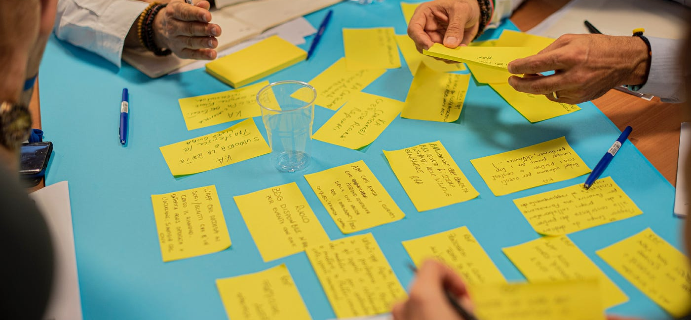
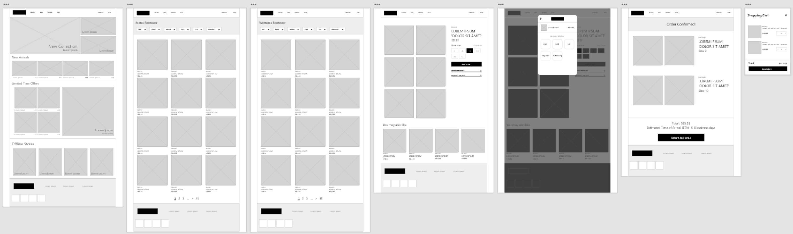
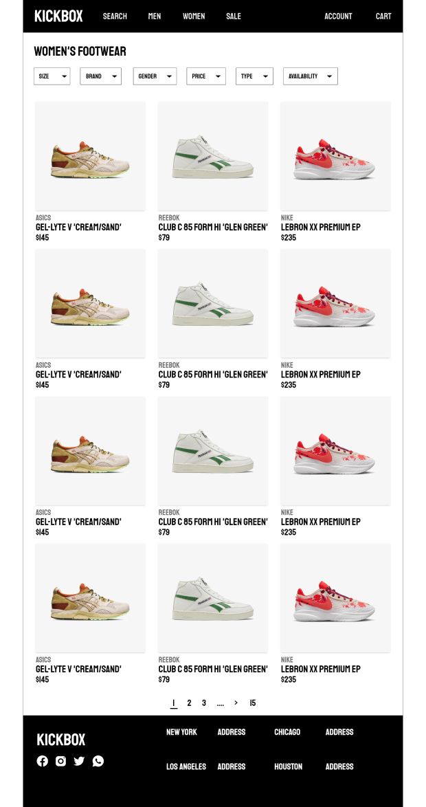
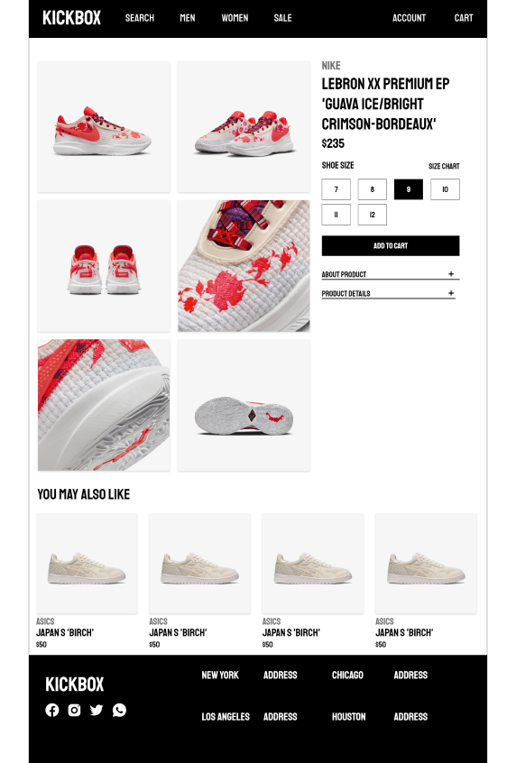
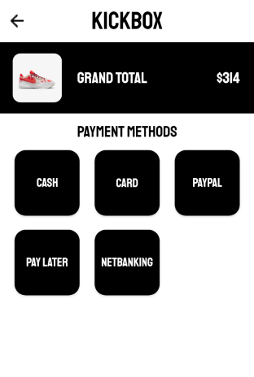
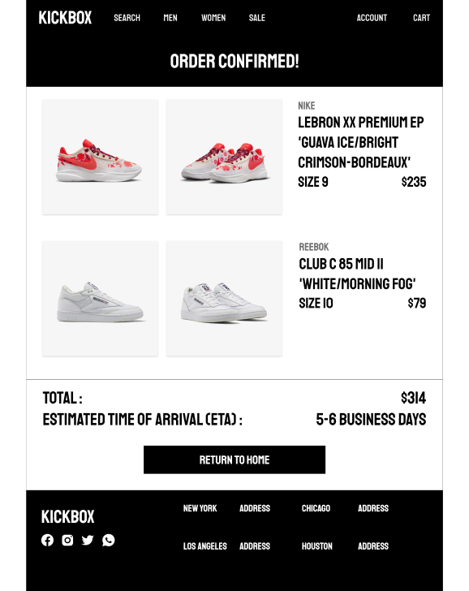
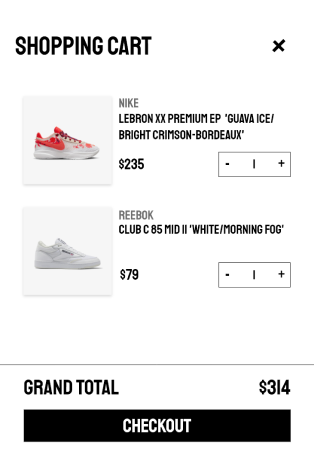
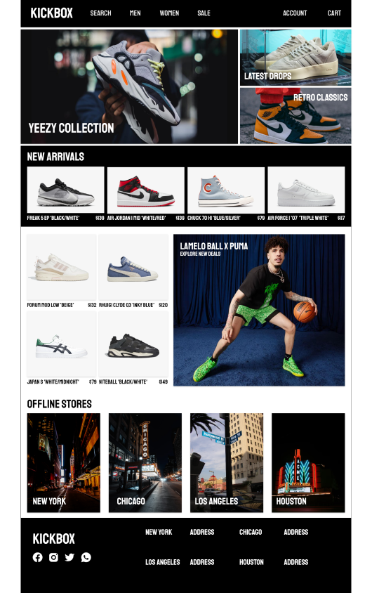

Work
About

A shopping experience for your local shoe store.
Role
UX designer, leading the KickBox website design.
Goal
Designing a shopping experience that is effortless and convenient to the
user, enabling them to purchase a shoe as smoothly as possible.
Audience
Anyone looking to purchase a pair of shoes, primarily for teenagers and
young adults.
Challenges
Conducting interviews, paper and digital wireframing, low and
high-fidelity prototyping, conducting usability studies, accounting for
accessibility, and iterating on designs.
Research
I conducted user interviews to understand the user needs and pain points
with the current websites that are present in the market. Many users
find the process of shopping in-store as time consuming and tedious as
they prefer shopping online from the comfort of their home. They also
want their experience to be as simple as possible, but not at the cost
of being deceived by the store outlet.
Initial Concepts
Including hero images, contrasting easy to read text were some of the
important principles that I tried to incorporate into my design.
User Testing
I conducted two rounds of usability studies. Findings from the first
study helped guide the designs from wireframes to mockups. The second
study used a high-fidelity prototype and revealed what aspects of the
mockups needed refining.
Final Stages
Early designs were unclear about the layout so I added clear call to
action buttons to make the platform more intuitive and easy to interact
with.
Initial wireframes of CineBar
© 2023. All Rights Reserved to Shivraj Ghorpade.








Initial Wireframes of KickBox
Final Mockups of KickBox
All
KickBox
KinderChef

Conclusion
Learnings
Our target users shared that the design was easy to navigate and very
engaging with the images and clearly showed a visual hierarchy.
I learned that even the smallest changes make a very big difference to
the final user experience. The most important takeaway I received was to
always focus on what the user needs at all points of the flow of the
site.
About